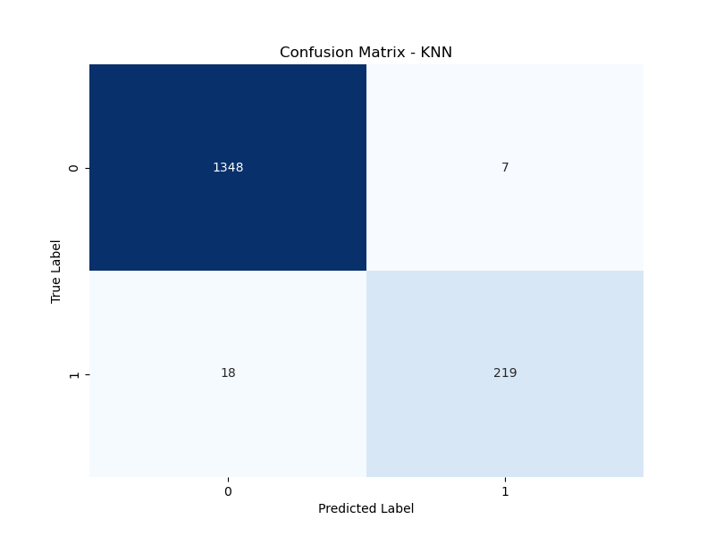

Results for Sex Prediction:
Interpretation:
- All models perform very well with high accuracy and balanced precision and recall.
- The Random Forest model slightly outperforms SVM and KNN in terms of accuracy.
- For the Female class, all models show very high precision, recall, and F1 scores.
- For the Male class, there is a slight decrease in precision, recall, and F1 score, indicating some misclassification.
- Overall, the models are effective in predicting sex, especially for the Female class. Fine-tuning and hyperparameter optimization could potentially improve performance further.
- Feature Importance: WBF (Wingbeat Frequency): 68.95%
Random Forest Model:
| Accuracy: | 98.74% |
| Precision: | 98.74% |
| Recall: | 98.74% |
| F1 Score: | 98.74% |
| Detailed evaluation per class: | |
| Female: | |
| Precision: | 99% |
| Recall: | 99% |
| F1 Score: | 99% |
| Male: | |
| Precision: | 97% |
| Recall: | 95% |
| F1 Score: | 96% |
SVM Model:
| Accuracy: | 98.68% |
| Precision | 98.68% |
| Recall | 98.68% |
| F1 Score: | 98.67% |
| Detailed evaluation per class: | |
| Female: | |
| Precision: | 99% |
| Recall: | 100% |
| F1 Score: | 99% |
| Male: | |
| Precision: | 98% |
| Recall: | 93% |
| F1 Score: | 95% |
KNN Model:
| Accuracy: | 98.43% |
| Precision: | 98.42% |
| Recall: | 98.43% |
| F1 Score: | 98.41% |
| Detailed evaluation per class: | |
| Female: | |
| Precision: | 99% |
| Recall: | 99% |
| F1 Score: | 99% |
| Male: | |
| Precision: | 97% |
| Recall: | 92% |
| F1 Score: | 95% |
Fig 3. Confusion matrix for Random Forest Sex Prediction Model

Fig 4. Confusion matrix for KNN Sex Prediction Model
Fig 5. Confusion matrix for SVM Sex Prediction Model